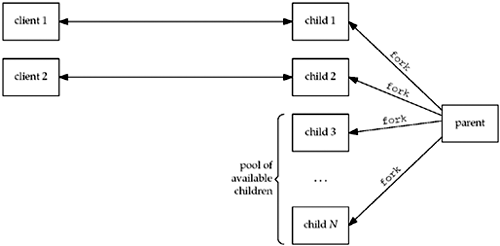
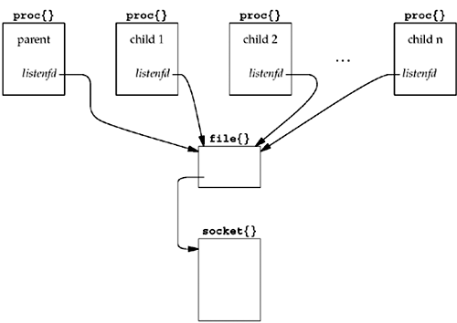

| [ Team LiB ] |
|
30.6 TCP Preforked Server, No Locking Around acceptOur first of the "enhanced" TCP servers uses a technique called preforking. Instead of generating one fork per client, the server preforks some number of children when it starts, and then the children are ready to service the clients as each client connection arrives. Figure 30.8 shows a scenario where the parent has preforked N children and two clients are currently connected. Figure 30.8. Preforking of children by server. The advantage of this technique is that new clients can be handled without the cost of a fork by the parent. The disadvantage is that the parent must guess how many children to prefork when it starts. If the number of clients at any time ever equals the number of children, additional clients are ignored until a child is available. But recall from Section 4.5 that the clients are not completely ignored. The kernel will complete the three-way handshake for any additional clients, up to the listen backlog for this socket, and then pass the completed connections to the server when it calls accept. But, the client application can notice a degradation in response time because even though its connect might return immediately, its first request might not be handled by the server for some time. With some extra coding, the server can always handle the client load. What the parent must do is continually monitor the number of available children, and if this value drops below some threshold, the parent must fork additional children. Also, if the number of available children exceeds another threshold, the parent can terminate some of the excess children, because as we'll see later in this chapter, having too many available children can degrade performance, too. But before worrying about these enhancements, let's examine the basic structure of this type of server. Figure 30.9 shows the main function for the first version of our preforked server. Figure 30.9 main function for preforked server.server/serv02.c
1 #include "unp.h"
2 static int nchildren;
3 static pid_t *pids;
4 int
5 main(int argc, char **argv)
6 {
7 int listenfd, i;
8 socklen_t addrlen;
9 void sig_int(int);
10 pid_t child_make(int, int, int);
11 if (argc == 3)
12 listenfd = Tcp_listen(NULL, argv[1], &addrlen);
13 else if (argc == 4)
14 listenfd = Tcp_listen(argv[1], argv[2], &addrlen);
15 else
16 err_quit("usage: serv02 [ <host> ] <port#> <#children>");
17 nchildren = atoi(argv[argc - 1]);
18 pids = Calloc(nchildren, sizeof(pid_t));
19 for (i = 0; i < nchildren; i++)
20 pids[i] = child_make(i, listenfd, addrlen); /* parent returns */
21 Signal(SIGINT, sig_int);
22 for ( ; ; )
23 pause(); /* everything done by children */
24 }
11–18 An additional command-line argument is the number of children to prefork. An array is allocated to hold the PIDs of the children, which we need when the program terminates to allow the main function to terminate all the children. 19–20 Each child is created by child_make, which we will examine in Figure 30.11. Our signal handler for SIGINT, which we show in Figure 30.10, differs from Figure 30.5. 30–34 getrusage reports on the resource utilization of terminated children, so we must terminate all the children before calling pr_cpu_time. We do this by sending SIGTERM to each child, and then we wait for all the children. Figure 30.11 shows the child_make function, which is called by main to create each child. 7–9 fork creates each child and only the parent returns. The child calls the function child_main, which we show in Figure 30.12 and which is an infinite loop. Figure 30.10 Singal handler for SIGINT.server/serv02.c
25 void
26 sig_int(int signo)
27 {
28 int i;
29 void pr_cpu_time(void);
30 /* terminate all children */
31 for (i = 0; i < nchildren; i++)
32 kill(pids[i], SIGTERM);
33 while (wait(NULL) > 0) /* wait for all children */
34 ;
35 if (errno != ECHILD)
36 err_sys("wait error");
37 pr_cpu_time();
38 exit(0);
39 }
Figure 30.11 child_make function: creates each child.server/child02.c
1 #include "unp.h"
2 pid_t
3 child_make(int i, int listenfd, int addrlen)
4 {
5 pid_t pid;
6 void child_main(int, int, int);
7 if ( (pid = Fork()) > 0)
8 return (pid); /* parent */
9 child_main(i, listenfd, addrlen); /* never returns */
10 }
Figure 30.12 child_main function: infinite loop executed by each child.server/child02.c
11 void
12 child_main(int i, int listenfd, int addrlen)
13 {
14 int connfd;
15 void web_child(int);
16 socklen_t clilen;
17 struct sockaddr *cliaddr;
18 cliaddr = Malloc(addrlen);
19 printf("child %ld starting\n", (long) getpid());
20 for ( ; ; ) {
21 clilen = addrlen;
22 connfd = Accept(listenfd, cliaddr, &clilen);
23 web_child(connfd); /* process the request */
24 Close(connfd);
25 }
26 }
20–25 Each child calls accept, and when this returns, the function web_child (Figure 30.7) handles the client request. The child continues in this loop until terminated by the parent. 4.4BSD ImplementationIf you have never seen this type of arrangement (multiple processes calling accept on the same listening descriptor), you probably wonder how it can even work. It's worth a short digression on how this is implemented in Berkeley-derived kernels (e.g., as presented in TCPv2). The parent creates the listening socket before spawning any children, and if you recall, all descriptors are duplicated in each child each time fork is called. Figure 30.13 shows the arrangement of the proc structures (one per process), the one file structure for the listening descriptor, and the one socket structure. Figure 30.13. Arrangement of proc, file, and socket structures. Descriptors are just an index in an array in the proc structure that reference a file structure. One of the properties of the duplication of descriptors in the child that occurs with fork is that a given descriptor in the child references the same file structure as that same descriptor in the parent. Each file structure has a reference count that starts at one when the file or socket is opened and is incremented by one each time fork is called or each time the descriptor is duped. In our example with N children, the reference count in the file structure would be N + 1 (don't forget the parent that still has the listening descriptor open, even though the parent never calls accept). When the program starts, N children are created, and all N call accept and all are put to sleep by the kernel (line 140, p. 458 of TCPv2). When the first client connection arrives, all N children are awakened. This is because all N have gone to sleep on the same "wait channel," the so_timeo member of the socket structure, because all N share the same listening descriptor, which points to the same socket structure. Even though all N are awakened, the first of the N to run will obtain the connection and the remaining N - 1 will all go back to sleep, because when each of the remaining N - 1 execute the statement on line 135 of p. 458 of TCPv2, the queue length will be 0 since the first child to run already took the connection. This is sometimes called the thundering herd problem because all N are awakened even though only one will obtain the connection. Nevertheless, the code works, with the performance side effect of waking up too many processes each time a connection is ready to be accepted. We now measure this performance effect. Effect of Too Many ChildrenThe CPU time of 1.8 for the server in row 2 of Figure 30.1 is for 15 children and a maximum of 10 simultaneous clients. We can measure the effect of the thundering herd problem by just increasing the number of children for the same maximum number of clients (10). We don't show the results of increasing the number of children because the individual test results aren't that interesting. Since any number greater than 10 introduces superfluous children, the thundering herd problem worsens and the timing results increase.
Distribution of Connections to the ChildrenThe next thing to examine is the distribution of the client connections to the pool of available children that are blocked in the call to accept. To collect this information, we modify the main function to allocate an array of long integer counters in shared memory, one counter per child. This is done with the following: long *cptr, *meter(int); /* for counting # clients/child */ cptr = meter(nchildren); /* before spawning children */ Figure 30.14 shows the meter function. We use anonymous memory mapping, if supported (e.g., 4.4BSD), or the mapping of /dev/zero (e.g., SVR4). Since the array is created by mmap before the children are spawned, the array is then shared between this process (the parent) and all its children created later by fork. We then modify our child_main function (Figure 30.12) so that each child increments its counter when accept returns and our SIGINT handler prints this array after all the children are terminated. Figure 30.14 meter function to allocate an array in shared memory.server/meter.c
1 #include "unp.h"
2 #include <sys/mman.h>
3 /*
4 * Allocate an array of "nchildren" longs in shared memory that can
5 * be used as a counter by each child of how many clients it services.
6 * See pp. 467-470 of "Advanced Programming in the Unix Environment."
7 */
8 long *
9 meter(int nchildren)
10 {
11 int fd;
12 long *ptr;
13 #ifdef MAP_ANON
14 ptr = Mmap(0, nchildren * sizeof(long), PROT_READ | PROT_WRITE,
15 MAP_ANON | MAP_SHARED, -1, 0);
16 #else
17 fd = Open("/dev/zero", O_RDWR, 0);
18 ptr = Mmap(0, nchildren * sizeof(long), PROT_READ | PROT_WRITE,
19 MAP_SHARED, fd, 0);
20 Close(fd);
21 #endif
22 return (ptr);
23 }
Figure 30.2 shows the distribution. When the available children are blocked in the call to accept, the kernel's scheduling algorithm distributes the connections uniformly to all the children. select CollisionsWhile looking at this example under 4.4BSD, we can also examine another poorly understood, but rare phenomenon. Section 16.13 of TCPv2 talks about collisions with the select function and how the kernel handles this possibility. A collision occurs when multiple processes call select on the same descriptor, because room is allocated in the socket structure for only one process ID to be awakened when the descriptor is ready. If multiple processes are waiting for the same descriptor, the kernel must wake up all processes that are blocked in a call to select since it doesn't know which processes are affected by the descriptor that just became ready. We can force select collisions with our example by preceding the call to accept in Figure 30.12 with a call to select, waiting for readability on the listening socket. The children will spend their time blocked in this call to select instead of in the call to accept. Figure 30.15 shows the portion of the child_main function that changes, using plus signs to note the lines that have changed from Figure 30.12. Figure 30.15 Modification to Figure 30.12 to block in select instead of accept.
printf("child %ld starting\n", (long) getpid());
+ FD_ZERO(&rset);
for ( ; ; ) {
+ FD_SET(listenfd, &rset);
+ Select(listenfd+1, &rset, NULL, NULL, NULL);
+ if (FD_ISSET(listenfd, &rset) == 0)
+ err_quit("listenfd readable");
+
clilen = addrlen;
connfd = Accept(listenfd, cliaddr, &clilen);
web_child(connfd); /* process request */
Close(connfd);
}
If we make this change and then examine the kernel's select collision counter before and after, we see 1,814 collisions one time we run the sever and 2,045 collisions the next time. Since the two clients create a total of 5,000 connections for each run of the server, this corresponds to about 35–40% of the calls to select invoking a collision. If we compare the server's CPU time for this example, the value of 1.8 in Figure 30.1 increases to 2.9 when we add the call to select. Part of this increase is probably because of the additional system call (since we are calling select and accept instead of just accept), and another part is probably because of the kernel overhead in handling the collisions. The lesson to be learned from this discussion is when multiple processes are blocking on the same descriptor, it is better to block in a function such as accept instead of blocking in select. |
| [ Team LiB ] |
|